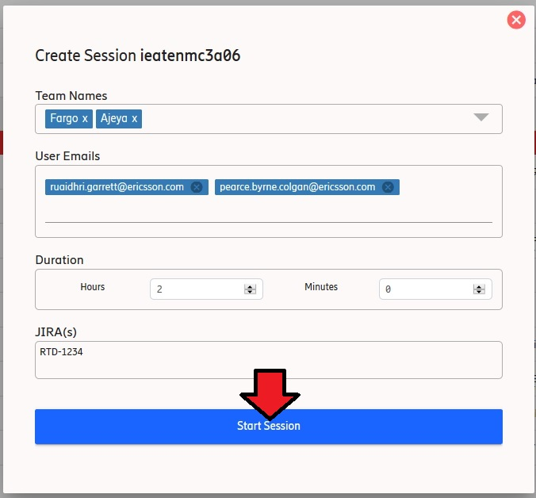

Quarantine Management
Overview
This page describes Quarantine Management in EMT.
It will also describe what a session is and what it can be used for.
Purpose
The concept of Quarantine Management gives users of EMT the ability to loan out a test environment to
teams/users.
EMT`s Quarantine Management functionality will be able to track this loan for them in a session
Quarantine Management tracks the team(s)/user(s) assigned to a session/environment and the amount of time allocated to
them.
Sessions
Quarantine Management is a collection of sessions on environments which allows environments to be loaned out and
tracked.
It allows you to create and manage sessions. Sessions allow users of EMT to easily identify who the test
environment is assigned to and how long it is assigned to them for.
The components of a session are:
- Teams - A session may have an associated team(s). Each session requires a minimum of one team or user. The associated
team(s)
are those in which the test environment is loaned to
- User Emails - A session may have an associated user(s). Each session requires a minimum of one team or user. The associated
users(s)
are those in which the test environment is loaned to
- Duration - A session consists of a duration. This allows the session to manage the time period for loaning
out a
environment. The duration is set by inputting an amount of hours and minutes, this is then added on to the
time
when a session is started. This is the end time for a session.
- JIRAs - A session may have linked JIRAs. These are JIRAs that track an issue which resulted in the team/user
needing the environment for troubleshooting. It helps OPS understand why certain sessions were created.
How to Create and Start a Session on a Environment
Steps
1 Choose Environment
- Find the environment you want to create a session on.
- You can only create sessions on environments in QUARANTINE state so it must be an environment displayed
in the QUARANTINE table.
- Only environments in QUARANTINE state will have the option to create a session.
- You can click the ellipsis under the "Action(s)" column of the environment's row in the
QUARANTINE table.
- From here, you can click "Create Session".
-
2 Input Session Details
- Select the team(s) you want to create a session for. You may create a session for one or more teams.
There is
a search bar provided for searching for teams. For a team to be available for selection, they must be in
the
Team
Inventory Tool with their email in a format like this: pdlenmcoun@pdl.internal.ericsson.com.
- Type the user(s) emails you want to create a session for. You may create a session for one or more users.
- Select the amount of time you want the session to last for in hours and minutes. Only numbers can be
entered here.
- In order for a session to be created, a minimum of one team or user must be selected and the session duration
must be set.
- Optionally, you can enter JIRAs related to the session in the JIRAs text field.
- Insert Jira(s) in a comma separated list like:
RTD-1234, RTD-4321
Jira URLs are allowed.
- WLVM checkbox if ticked a troubleshooting user will be created on the WLVM for all team(s)/user(s) assigned to the session.
- This feature is only available for physical environments.
- The Start Session button should now be enabled, click it to start a session.
- 
- When a session starts, both ops and the teams/users assigned to the session get an email notification
containing the session details.
3 Wait For The Session To Create
- After clicking the "Create Session" button, you will be presented with a progress icon
- For physical environments, EMT will retrieve any details it needs to connect to the MS
- It then creates a user on the MS so the assigned teams can use that user to log onto the MS
- If you ticked WLVM checkbox it will create a troubleshooting user on WLVM with the same credentials.
4 View Session
- When the session is created the modal popup disappears
- You can now see a new icon appeared under the "Action(s)" column of the environment's row showing there
is a session ongoing on that environment.
-
Result
A session should be created on an environment which will allow a feature team/user to troubleshoot an environment
along
with any relevant environment information they may need.
Session MS User
Due to a lock down of the MS on physical environments, when creating a session, EMT will also create a
temporary user on the MS of a physical environment.
If the WLVM checkbox is ticked a temporary user will be created on the WLVM of a physical environment
EMT will then send the details of that session MS/WLVM user to the team/user in the quarantine session email.
This MS/WLVM user will be deleted as soon as the session expires or is stopped.
For operations users only, the credentials will be displayed on the sessions view as outlined below.
Manage Session
Much like when creating a session, to manage a session you can click the ellipsis under the "Action(s)" column
of the environment's row in the QUARANTINE table.
Instead of seeing a 'Create Session' option, you will now see a 'Manage Session' option. Clicking on it allows
you to manage the session on this environment.
Manage Session functionality:
-
Edit Session - Allows a user to edit details about a session:
- Assigned Team(s) - Update the teams assigned to a session. There must be at least one team/user assigned
to the
session.
- User Emails - Update the users assigned to a session. There must be at least one team/user assigned
to the
session.
- JIRA(s) - Update the JIRAs assigned to a session. Can be either as URL or Ticket Numbers. Insert
multiple
JIRAs in a comma separated list. E.g. "RTD-123, RTD-321"
-
WLVM Checkbox - this checkbox will either create or delete the temporary user for all team(s)/user(s) on the session.
- Checked - all team(s)/user(s) assigned to this session will have a troubleshooting user created on WLVM
- Unchecked - all team(s)/user(s) assigned to this session will have a troubleshooting user deleted on WLVM
- An email will be sent to all relevant teams informing them of the changes to the session details.
- Stop Session - Allows you to stop a session before the time has elapsed. e.g. A feature team has finished
troubleshooting early.
Sessions View
In the session view tab of EMT there is a view of sessions.
By default it will show active sessions on page load ordered by end time, the next session to expire will be at
the
top. There is a table which displays:
- Environment - The name of environment the session is associated with.
- Team(s) - The team or teams assigned to a session. The available teams are retrieved from the Team Inventory
Tool.
- Users - The user or users assigned to a session.
- Status - The current status of the session.
- Session credentials - The credentials of the session MS/WLVM user (Only applicable for Physical environments).
If the EMT user has the "OPs" role, they will be able to see the "reveal" button, and on click will
display the MS/WLVM credentials for each troubleshooting team/user. If EMT users do not have the "OPs" role,
then simply a dash (-) will display.
- Start Time - Is the time a session started at. This time will be displayed in your own local time i.e. the
time
on your browser.
- End Time - Is the time a session ends at. This time will be displayed in your own local time i.e. the time
on
your browser.
They can be filtered into the following categories based on the status:
- ACTIVE - displays all sessions currently ongoing.
- EXPIRED - displays all sessions which have gone past the expiry time or have been stopped.
- ALL - displays both active and expired sessions.